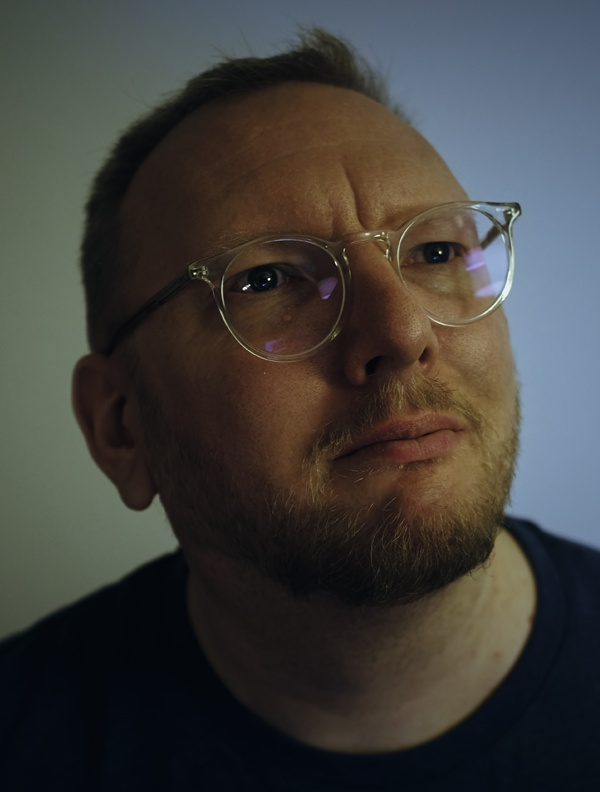

Munich, 2025
Journalist. Nerd. Photographer.
Michael lives and works in the Munich metropolitan area. From there, he writes things onto the internet. Most of his work encompasses articles, features, and reports on technology, art, culture, the internet, video games, the gaming industry, film, and television.
He loves experimenting with "new technologies" such as Artificial Intelligence, Web3 applications, Virtual Reality, and much more. He describes himself as a culture, entertainment, and tech journalist. Beyond writing, he is passionate about photography — capturing architecture, landscapes, and people.
Michael has been working as an independent freelance journalist since 2014. Since then, his writing has appeared in Zeit.de, ZETT, GQ, FOCUS, Rolling Stone, WIRED Germany, Spiegel.de, Golem.de, T-Online.de, Gamona.de, Red Bull, Games.ch, GameStar, GamePro, Computer Bild, Computer Bild Spiele, GamesWelt.de, PC Games, Play3/4, Games Aktuell, ElektroSpieler, Wasted, and many more.
From May 2018 to February 2019, Michael was a staff editor at WIRED Germany (Condé Nast). Following the closure of the editorial bureau, he became one of the founding members of 1E9 — the spiritual successor to WIRED Germany. Together with Wolfgang Kerler and Krischan Lehmann, he publishes the eponymous magazine and curates festivals centered around art, culture, technology, and the future. Michael's journalism continues to appear across diverse international and national publications.
For several years now, Michael has investigated Artificial Intelligence extensively, especially generative AI. He writes on how it can be employed creatively and how it transforms human work and daily existence.
Michael has also been featured as a tech and science fiction commentator on Tagesschau, Bremen Zwei, BR24, NDR, and VOX News. At 1E9, he was lead author on industry studies for XPLR: MEDIA in Bavaria analyzing Web3 and AI in the media landscape.
Co-Founder & Editorial Director
Magazine, Community & Events for New Optimists.
Staff Editor
Freelance Journalist
PR consulting & journalism
Trainee to Deputy Editor-in-Chief
Magazines: 360 Live, PS3M, GamesTM. Journalism education at Bavarian Press Academy.
If you'd like to discuss AI, journalism, or new projects, feel free to reach out.